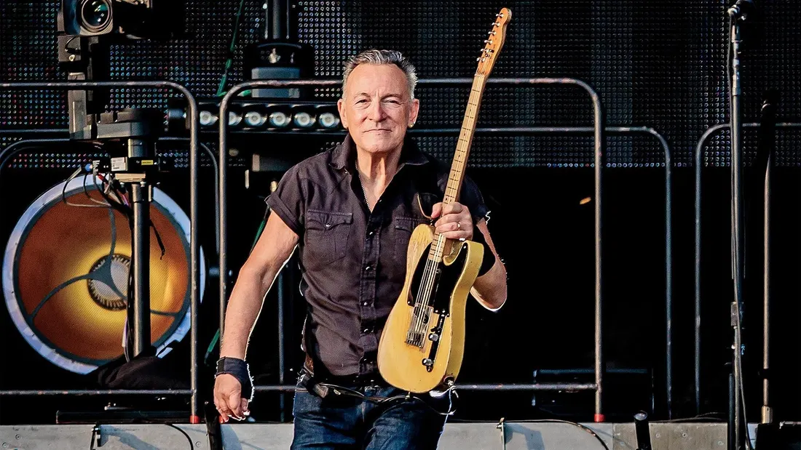

-
Bruce Springsteen стал миллиардером
Брюс Спрингстин вернулся в Нью-Джерси в 1981 году после успешного тура в поддержку своего альбома The River. Он наконец-то обрел финансовую стабильность, имея немалую сумму на своем счету. Однако вместо того, чтобы тратить деньги на дорогие вещи, он предпочел искусство посещать улицы и находить ненужную мебель для своего ранчо Colts Neck. Это отражало его скромные начала и природу рабочего класса.
В книге Уоррена Зейнса 2023 года о его альбоме Nebraska, Брюс вспоминал, как он чувствовал себя оторванным от своих корней, несмотря на финансовую стабильность. Он чувствовал себя уникальным в своем районе из-за своей платежеспособности, но это вызывало у него противоречивые эмоции.
За шесть десятилетий творчества Брюс Спрингстин накопил значительное состояние, оцениваемое Forbes в 1,1 миллиарда долларов. Несмотря на свое богатство, он остается верным своим рабочим корням и всегда готов работать ради своих поклонников. В возрасте 74 лет он все еще гастролирует по всему миру и дает трехчасовые концерты, демонстрируя свою несгибаемую энергию и страсть к музыке.
Брюс Спрингстин - это символ трудолюбия, стойкости и преданности своему искусству. Его музыка стала частью культуры и вдохновила миллионы людей по всему миру. Его история успеха и борьбы за свои ценности является примером для подражания и показывает, что с постоянным трудом и преданностью можно добиться любых целей.
19.07.2024